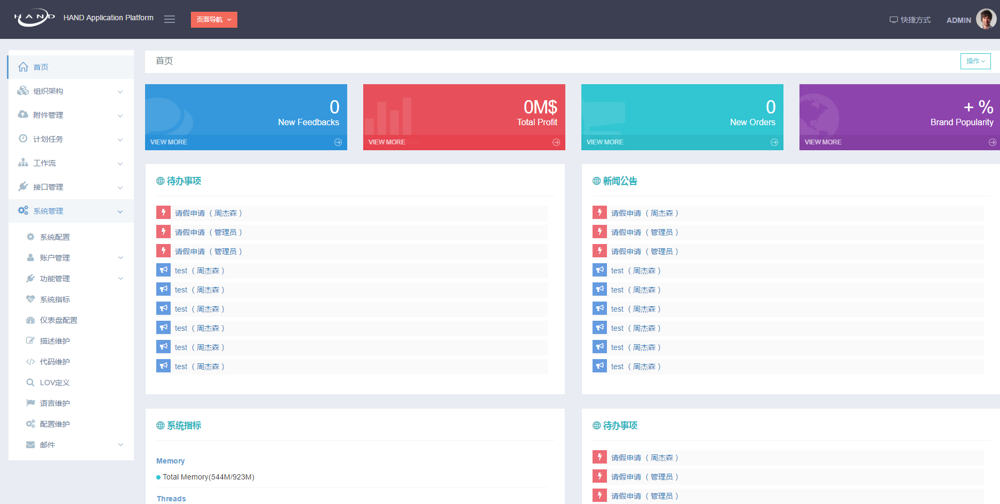
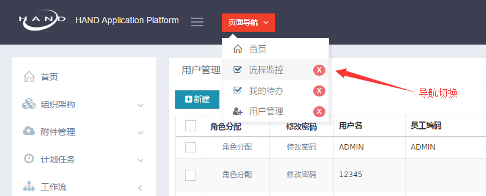
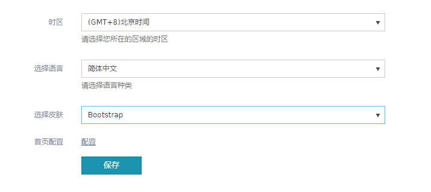
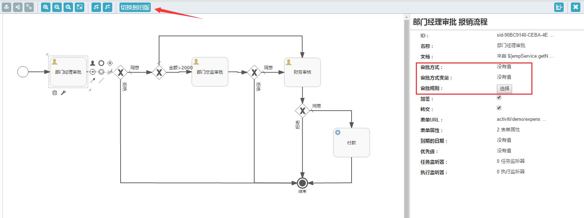
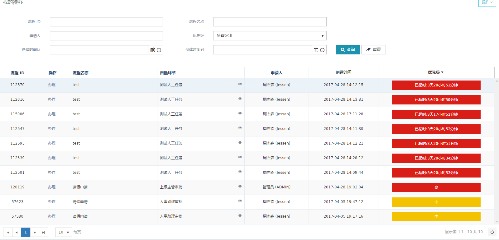

本文主要描述 HAP 3.1.0-RELEASE 所包含的更新内容.
更新内容
1. 主界面
引入了新的扁平化界面风格，包括登录以及主界面都有较大改变。
登录界面
左侧为登录轮播图，右侧是用户登录区域.
主界面
左侧可收缩菜单，右边为工作主区域

首页内容仅为展示模板，项目中可根据实际情况进行修改。
功能导航
主界面去除了标签页的导航方式，改为“页面导航” 下拉框进行页面的切换。

皮肤切换
在 KendoUI 皮肤的基础上优化了 3 套组件皮肤，Bootstrap(默认), Material, Fiori.
可在 “首选项” 中进行切换.

3套皮肤仅仅针对 KendoUI 相关组件的配色进行调整，并不改变主界面风格。
2. 工作流
流程设计
3.1 版本的工作流做了部分调整改造，增加了"审批方式","审批规则","审批权限"等功能，简化了 Activiti 原有的流程设计概念，力争从业务的角度来设计流程，避免过多的技术性的配置.
具体审批规则，审批方式，审批权限等功能细节请参考以下链接：
流程设计器
针对流程配置的变化，流程设计器也做了相应调整改造。点击“流程设计”默认是打开改造后的设计器，保留了旧版设计器链接，方便对旧的流程定义进行调整。

点击 “人工任务” 节点，可以看到相应的配置信息，具体设置参考上面的链接.
节点中可以配置 “撤回” “加签”
流程优先级
节点中设置了“到期日期” ，后台计划任务会半个小时计算一下期限，自动调整节点优先级。
可自定义实现根据“到期日期”计算优先级的逻辑。

3. 消息服务增加对 RabbitMQ 的支持
3.1 版本的 “消息服务” 增加了对 RabbitMQ 的支持，在 config.properties 文件中可修改默认实现（默认是 Redis ) 参考链接
注意事项！！
3.0.9-RELEASE 之前的版本可升级到 3.1.0-RELASE，如果项目中登录界面以及首页有大量个性化改造的在升级种留意覆盖掉默认的页面文件。
不支持从 HAP 1.0 直接升级！
初始化数据表
新版不可避免的会有一些新的表加入。
请记得 执行数据库初始化命令 来增量的更新数据库。
如果不想更新某些表的数据，比如 SYS_USER(密码)
可以在执行命令的时候使用参数
-Ddb.skipUpdateTables=SYS_USER来禁止更新数据（仍然会插入）使用逗号
,分割多个表配置文件
如果项目上有自定义覆盖的配置文件，请仔细查看：config.properties本次更新引入新的参数,注意比对差异！application*.xml如果项目上自定义覆盖过任何一个相关文件，请逐一检查是否需要更新
web.xml新版本在 web.xml 中增加了新的内容，属于
必要的内容.如果项目中自定义过 web.xml ，请务必更新！！